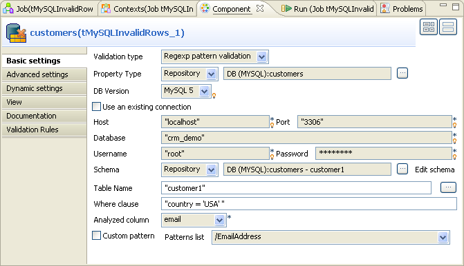
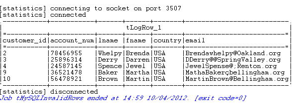
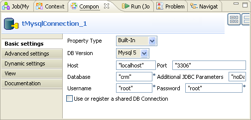
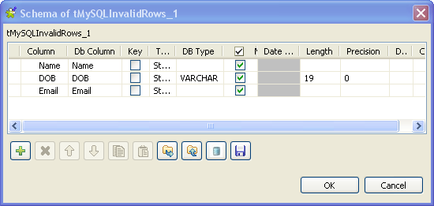

Warning
This component will be available in the Palette of the studio on the condition that you have subscribed to any Talend Platform product.
|
Component family |
Data Quality | |
|
Function |
tMySQLInvalidRows checks database rows against specific Talend Data Quality database patterns or data quality rules (business rules). | |
|
Purpose |
tMySQLInvalidRows allows you to extract DB rows that do not match a given data quality pattern or rule. You can then implement any required correction. | |
|
Basic settings |
Validation type |
Either Regex pattern validation or DQ rule validation. |
|
Regex pattern validation: Validate data in the database against regex patterns. | ||
|
DQ rule validation: Validate data in the database against DQ rules. | ||
|
|
Property type |
Either Built-in or Repository. |
|
Built-in: No property data stored centrally. | ||
|
|
|
Repository: Select the repository file where Properties are stored. The fields that come after are pre-filled in using the fetched data. |
|
DB Version | Select the MySQL version you are using. | |
|
|
Use an existing connection |
Select this check box and in the Component List click the relevant connection component to reuse the connection details you already defined. NoteWhen a Job contains the parent Job and the child Job, if you need to share an existing connection between the two levels, for example, to share the connection created by the parent Job with the child Job, you have to:
For an example about how to share a DB connection across Job levels,see Talend Data Integration Studio User Guide. |
|
|
Host |
Database server IP address. |
|
|
Port |
Listening port number of DB server. |
|
|
Database |
Name of the database. |
|
|
Username and Password |
DB user authentication data. |
|
|
Schema and Edit Schema |
A schema is a row description, i.e., it defines the number of fields to be processed and passed on to the next component. The schema is either built-in or remotely stored in the Repository. |
|
|
|
Built-in: You create and store the schema locally for this component only. Related topic: see Talend Data Integration Studio User Guide. |
|
|
|
Repository: You have already created the schema and stored it in the Repository and thus reuse it when needed. Related topic: see Talend Data Integration Studio User Guide. |
|
|
Table Name |
Enter the name of the table to be read. |
|
|
Where clause |
Enter a WHERE clause to define a row filter on the table. You can use the WHERE clause to filter the rows you want to analyze in the table. This WHERE clause enables you then to retrieve valid and invalid data that match certain specified criteria or conditions. |
|
NoteAvailable only for Regex pattern validation. |
Analyzed column |
Select from the schema list the column to analyze. |
|
NoteAvailable only for Regex pattern validation. |
Custom pattern |
Select this check box to define manually your own customized regular expression against which you want to check the DB rows. |
|
NoteAvailable only for Regex pattern validation. |
Patterns list |
Select from the pattern list the pattern against which you want to check the DB rows. |
|
NoteAvailable only for DQ rule validation. |
DQ rule list |
Select from the list the rule against which you want to check the DB rows. |
|
NoteAvailable only for DQ rule validation. |
Query type |
Either Built-in or Repository: |
|
Built-in: Fill in manually the query statement or build it graphically using SQLBuilder. | ||
|
Repository: Select the relevant query stored in the Repository. The Query field are filled in accordingly. | ||
|
NoteAvailable only for DQ rule validation. |
Guess Query |
Click the Guess Query button to generate the query which corresponds to your table schema in the Query field. |
|
NoteAvailable only for DQ rule validation. |
Guess schema |
Click the Guess Schema button to retrieve the schema from the table. |
|
NoteAvailable only for DQ rule validation. |
Query |
Enter your DB query paying particular attention to properly sequence the fields in order to match the schema definition. |
|
Advanced settings |
Additional JDBC Parameters |
Specify additional connection properties for the DB connection you are creating. This option is not available if you have selected the Use an existing connection check box in the Basic settings. NoteYou can press Ctrl+Space to access a list of predefined global variables. |
|
Enable stream | Select this check box to enables streaming over buffering. This allows reading from large tables without consuming large amount of memory in order to optimize the performance. | |
|
Trim all the String/Char columns | Select this check box to remove leading and trailing whitespace from all the String/Char columns. | |
|
Trim column |
Remove leading and trailing whitespace from the defined columns. NoteClear the Trim all the String/Char columns to enable Trim column. | |
|
tStatCatcher Statistics |
Select this check box to collect log data at the component level. | |
|
Dynamic settings |
Click the [+] button to add a row in the table and fill the Code field with a context variable to choose your database connection dynamically from multiple connections planned in your Job. This feature is useful when you need to access database tables having the same data structure but in different databases, especially when you are working in an environment where you cannot change your Job settings, for example, when your Job has to be deployed and executed independent of Talend Studio. The Dynamic settings table is available only when the Use an existing connection check box is selected in the Basic settings view. When a dynamic parameter is defined, the Component List box in the Basic settings view becomes unusable. For more information on Dynamic settings and context variables, see Talend Data Integration Studio User Guide. | |
|
Usage |
This component can be used as a start or intermediary step. It requires an output flow. | |
|
Limitation |
n/a | |
This scenario is a two-component Job created in Talend Data Integration Studio. In this Job, tMySQLInvalidRows reads the email addresses for people from a specific country from a MySQL database table, filters data using a WHERE clause to narrow down the validation process, checks the email values against the given Talend Data Quality email pattern and finally extracts filtered data including the invalid rows and displays them on the console.
Below is the database table used in this example, some customers are from the USA and others are from Canada. The Email column contains some invalid addresses. The tMySQLInvalidRows component filters data in the Email column to read only the emails for the customers from the USA, and then validates these email addresses against the EmailAddress pattern.

In this scenario, we have already stored the schemas of the input table in the Repository. For more information about storing schema metadata in the Repository tree view, see Talend Data Integration Studio User Guide.
Procedure 6.7. Setting up your Job
In the Repository tree view, expand in succession the Metadata and the DB Connections nodes where you have stored the input schemas and drop the relevant connection onto the design workspace.
The [Components] dialog box displays.

Select tMySQLInvalidRows from the list and click OK to close the dialog box.
The tMySQLInvalidRows component displays on the workspace. The MySQL table used in this scenario is called customers. It holds the customers' customer_id, account_num, Iname, fname, country and Email columns.
Drop tLogRow from the Palette onto the design workspace.
Connect the two components together using the Main link.

Procedure 6.8. Setting up the schema
Double-click tMySQLInvalidRows to display its Basic settings view and define its properties.
All database connection fields are automatically filled in. If you do not define your input files in the Repository, fill in the details manually after selecting Built-in in the Property Type field
From the Validation type list, select Regex pattern validation.
This will validate data in the selected rows against a regex pattern. For an example scenario about validating data against DQ rule, see the section called “Scenario 2: Checking customer table against a given DQ rule to select customer records”.
In the Table Name field, type in the name of the database table on which you want to run the Job, customer1 in this example.
In the Where clause field, type in the WHERE clause that will restrict the number of the analyzed rows.
In this example you want to examine only the emails of the customers from the USA.
In the Analyzed column list, select the column you want to analyze, Email in this example.
In the Patterns list, select the Talend Data Quality database pattern against which you want to check addresses from the Email column, Email Address in this example.
Note
If you select the Custom pattern check box, you can customize the regular expression against which the data is to be checked.
Double click tLogRow to open its Basic settings view and define its properties as needed.
Procedure 6.9. Executing the Job
Save your Job.
Press F6 to execute it.
The tMySQLInvalidRows component analyzed the email addresses only for customers from the USA in the database table against the selected SQL pattern (Email Address), and then it extracted all filtered data including the invalid email addresses.
This scenario is a three-component Job that checks a MySQL customer table against a given data quality rule so as to query specific customer records.

These components used in the Job are:
tMysqlConnection: this component creates the connection to the MySQL database of interest so that the other components can reuse it.
tMySQLInvalidRows: this component reuses the connection created by tMysqlConnection and query the customer records of interest against the given data quality rule.
tLogRow: this component presents the result of running this Job.
To replicate this scenario, proceed as illustrated in the following sections:
From the Palette, drop tMysqlConnection, tMySQLInvalidRows and tLogRow onto the design workspace.
Note
You can label any component in the workspace the way you need. For further information about how to label a component, see Talend Data Integration Studio User Guide.
Right-click tMysqlConnection and select the Trigger > OnSubjobOk link to connect this component to tMySQLInvalidRows.
Repeat this operation but select the Row > Main link to connect tMySQLInvalidRows to tLogRow.
To configure the connection to the MySQL database of interest, proceed as follows:
Double-click tMysqlConnection to open its Component view.
In the DB version field, select the version of your MySQL database. It is Mysql 5 in this example.
In the Host field, type in the server IP address of the database to which you want to connect, localhost in this example.
In the Port field, type in the port number of the database to which you want to connect, 3306 in this example.
In the Database field, enter the name of the database in which you need to check the customer table, crm in this example.
In the Username and the Password fields, enter the authentication information to connect to the database of interest.
Double-click tMySQLInvalidRows to open its Component view.

In the Validation type field, select DQ rule validation in order to use the given data quality rule.
Select Use an existing connection to reuse the connection that tMysqlConnection creates.
Click the [...] button next to Edit schema to open the schema editor.
Click the [+] button three times to add throw rows and rename them as Name, DOB and Email, respectively.
In the DOB row, select VARCHAR in the DB type column, enter 19 in the Length column and 0 in the Precision column.
Click OK to validate these changes and accept the propagation prompted by the pop-up dialog box.
In the Table name field, enter or browse to the database table to be checked, cust in this example.
In the Where clause field, type in the where clause to be used, in addition to the given data quality rule, to query the customer data of interest. In this scenario, enter
`cust`.`Email` like 's%'within the quotation marks to retrieve the email records beginning with the letter s or S.In the DQ rule list field, select the data quality rule to be used. In this scenario, select cust_age. This rule is a demo rule reading
18<=((TO_DAYS(NOW())-TO_DAYS(DOB))/365)Note
You can check the available data quality rules in Libraries > Rules > SQL of the DQ Repository. The cust_age rule can be imported from the TDQEEDEMOJAVA project.

For further information about the DQ Repository and its items and about how to import the data quality demo project, see the Talend Data Quality User Guide
Click Guess Query to generate the corresponding query clause that uses the Not clause.
In the Query field, change 18 to 20 to modify the clause as the following:
"SELECT `Name`, `DOB`, `Email` FROM `crm`.`cust` WHERE (NOT ( 20>((TO_DAYS(NOW())-TO_DAYS(DOB))/365) ) AND `cust`.`Email` like 's%')"This clause allows you to select the customers whose ages count 20 or more.
The tLogRow component presents the execution result of the Job. You can configure the presentation mode on its Component view.
To do this, double-click tLogRow to open the Component view and in the Mode area, select the Table (print values in cells of a table) option.
To execute this Job, press F6.
Once done, the Run view is opened automatically, where you can check the execution result.

You can read that the customer records beginning with the letter S are retrieved and their ages are all more than 20.